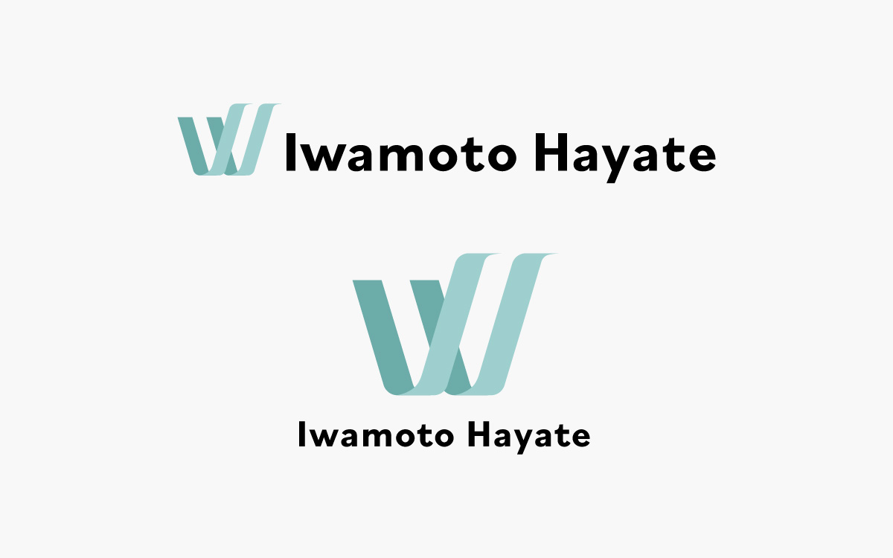

| 作品名 | ロゴ作成 |
|---|---|
| 制作期間 | 22時間 |
| 担当作業 | デザイン |
| 制作の目的 | 見る人に覚えてもらいやすいよう、自身のポートフォリオサイトや名刺を作成する際にロゴを使用するため |
| コンセプト | 見る人に覚えてもらえるよう、落ち着いた印象を与え、自身の名前や目標やを込めたロゴ |
| 作品説明 |
このシンボルマークは、私の名前と、デザインの力で世の中の課題を解決し、社会貢献のできるデザイナーになるという目標、それに向かって向上心を持ち続けるという決意を表しています。 シンボルマークには英字の「W」を使いました。私の名前である「颯」という漢字は風が立つ様が由来でできているそうです。象徴である風(wind)をキーワードに英語の大文字であるWをシンボルマークとしました。 Wの一部を風のイメージを形にして置き換えました。2本の風は右から左、下から上へ吹き込んでいる様子を表しています。 右から左へ向かうことで過去から未来へ向かう時間軸を、下から上へ向かうことで上昇気流を表現しました。 未来に向かって吹く、良き風になれるよう、常に向上心を持って取り組んでいきたいという思いを込めました。 |
| 使用ツール | Illustrator |